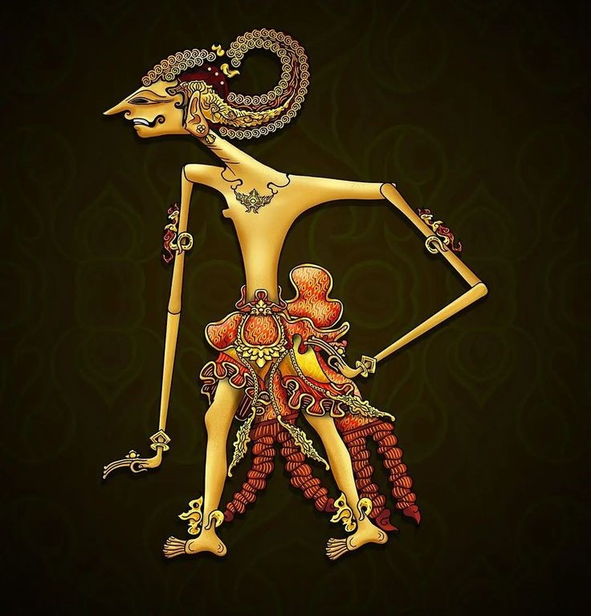
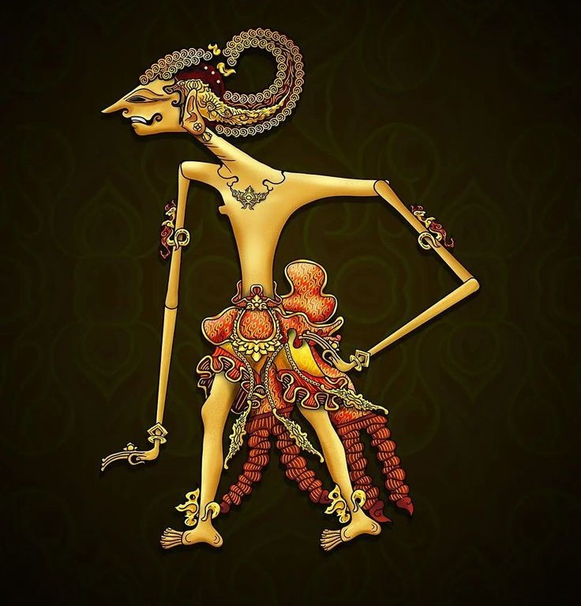
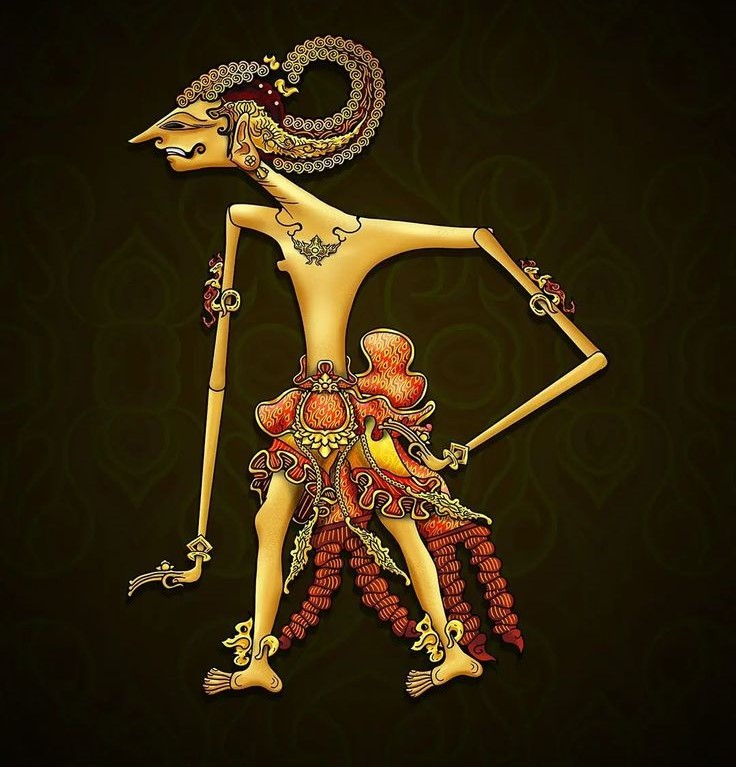

Sejarah Indonesia

Sejarah Indonesia
Memahami sebab dan akibat terjadinya peristiwa Reformasi 1998 dapat memberikan pelajaran penting bagi perubahan sistem demokrasi dan upaya memperbaiki kehidupan berbangsa dan bernegara di masa mendatang. Materi Sejarah Indonesia Kelas 12 Bab 5 Sistem dan Struktur Politik-Ekonomi Indonesia Masa Reformasi (1998-sekarang)
Krisis moneter yang melanda Thailand pada awal Juli 1997, merupakan permulaan peristiwa yang mengguncang nilai tukar mata uang negara-negara di Asia, seperti Malaysia, Filipina, Korea, dan Indonesia. Rupiah yang berada pada posisi nilai tukar Rp2.500,00/US$ terus mengalami kemerosotan. Situasi ini mendorong Presiden Soeharto meminta bantuan dari International Monetary Fund (IMF).
Reformasi adalah gerakan untuk mengubah bentuk atau perilaku suatu tatanan, karena tatanan tersebut tidak lagi disukai atau tidak sesuai dengan kebutuhan zaman, baik karena tidak efisien maupun tidak bersih dan tidak demokratis. “Reformasi atau mati”..
Sehari setelah dilantik, B.J. Habibie telah berhasil membentuk cabinet yang diberi nama Kabinet Reformasi Pembangunan. Kabinet Reformasi Pembangunan terdiri atas 36 Menteri, yaitu 4 Menteri Negara dengan tugas sebagai Menteri Koordinator, 20 Menteri Negara yang memimpin Departemen, dan 12 Menteri Negara yang memimpin tugas tertentu.
Di tengah maraknya gelombang demonstrasi mahasiswa dan desakan kaum intelektual terhadap legitimasi pemerintahan Habibie, pada 10–13 November 1998, MPR mengadakan Sidang Istimewa untuk menetapkan langkah pemerintah dalam melaksanakan reformasi di segala bidang.
Sesuai dengan Tap MPR No. X/MPR/1998, Kabinet Reformasi Pembangunan telah berupaya melaksanakan sejumlah agenda politik, yaitu merubah budaya politik yang diwariskan oleh pemerintahan sebelumnya, seperti pemusatan kekuasaan, dilanggarnya prinsip-prinsip demokrasi, terbatasnya partisipasi politik rakyat, menonjolnya pendekatan represif yang menekankan keamanan dan stabilitas, serta terabaikannya nilai-nilai Hak Asasi Manusia dan prinsip supremasi hukum.
Pelaksanaan Pemilu 1999, boleh dikatakan sebagai salah satu hasil terpenting lainnya yang dicapai Habibie pada masa kepresidenannya. Pemilu 1999 adalah penyelenggaraan pemilu multipartai (yang diikuti oleh 48 partai politik). Sebelum menyelenggarakan pemilu yang dipercepat itu, pemerintah mengajukan RUU tentang partai politik, tentang pemilu, dan tentang susunan dan kedudukan MPR, DPR, dan DPRD.
Satu peristiwa penting yang terjadi pada masa pemerintahan Presiden B.J. Habibie adalah diadakannya Referendum bagi rakyat Timor-Timur untuk menyelesaikan permasalahan Timor-Timur yang merupakan warisan dari pemerintahan sebelumnya. Harus diakui bahwa integrasi Timor-Timur (Tim-Tim) ke wilayah RI tahun 1975 yang dikukuhkan oleh TAP MPR No.VI/M7PR/1978, atas kemauan sebagian warga Timor-Timur tidak pemah mendapat pengakuan internasional.
Sesuai dengan Tap MPR tentang pokok-pokok reformasi yang menetapkan dua arah kebijakan pokok di bidang ekonomi, yaitu penanggulangan krisis ekonomi dengan sasaran terkendalinya nilai rupiah dan tersedianya kebutuhan bahan pokok dan obat-obatan dengan harga terjangkau, serta berputarnya roda perekonomian nasional, dan pelaksanaan reformasi ekonomi.
Sesuai Tap MPR No. X/MPR/1998 reformasi di bidang hukum diarahkan untuk menanggulangi krisis dan melaksanakan agenda reformasi di bidang hukum yang sekaligus dimaksudkan untuk menunjang upaya reformasi di bidang ekonomi, politik, sosial, dan budaya.
Pada masa pemerintahan Abdurrahman Wahid, MPR melakukan amendemen terhadap UUD 1945 pada tanggal 18 Agustus 2000. Amendemen tersebut berkaitan dengan susunan pemerintahan Negara Kesatuan Republik Indonesia yang terdiri atas pemerintahan pusat, provinsi, kabupaten dan kota..
Pada masa pemerintahan Presiden Megawati, MPR kembali melakukan amendemen terhadap UUD 1945 pada tanggal 10 November 2001. Amendemen tersebut meliputi penegasan Indonesia sebagai negara hukum dan kedaulatan berada di tangan rakyat.
Krisis ekonomi yang melanda Indonesia sejak 1998 belum dapat dilalui oleh dua presiden sebelum Megawati sehingga pemerintahannya mewarisi berbagai persoalan ekonomi yang harus dituntaskan. Masalah ekonomi yang kompleks dan saling berkaitan menuntut perhatian pemerintah untuk memulihkan situasi ekonomi guna memperbaiki kehidupan rakyat.
Pemerataan ekonomi di seluruh wilayah Indonesia merupakan salah satu pekerjaan rumah pemerintahan Presiden Megawati. Tidak meratanya pembangunan dan tidak adilnya pembagian hasil sumber daya alam antara pemerintah pusat dan daerah menjadi masalah yang berujung pada keinginan untuk melepaskan diri dari Negara Kesatuan Republik Indonesia terutama beberapa provinsi yang kaya akan sumber daya alam tetapi hanya mendapatkan sedikit dari hasil sumber daya alam mereka.
Terkait hubungan pemerintah pusat dan daerah, pemerintahan Presiden Megawati berupaya untuk melanjutkan kebijakan otonomi daerah yang telah dirintis sejak tahun 1999 seiring dengan dikeluarkannya UU No. 2 Tahun 1999 tentang perimbangan keuangan pusat-daerah..
Kendati berhasil melakukan berbagai pencapaian di bidang ekonomi dan politik terutama dalam menghasilkan produk undang-undang mengenai pelaksanaan otonomi daerah, pemerintahan Presiden Megawati belum berhasil melakukan penegakkan hukum (law enforcement).
Pemilu tahun 2004 merupakan pemilu pertama dimana untuk pertama kalinya masyarakat pemilik hak suara dapat memilih wakil rakyat mereka di tingkat pusat dan daerah secara langsung.
Sejak krisis yang dialami bangsa pada tahun 1998, kondisi perekonomian masyarakat Indonesia belum pulih. Upaya pengentasan kemiskinan yang juga pernah dicanangkan oleh presiden sebelumnya masih belum terlaksana sepenuhnya. Kondisi ini diperparah dengan terjadinya sejumlah bencana alam terutama tragedi tsunami di Aceh yang merenggut banyak korban dengan kerugian material yang sangat besar.
Pemerintahan yang solid berpengaruh terhadap kelancaran jalannya program-program pemerintah sehingga upaya untuk menjaga kesolidan pemerintahan menjadi salah satu faktor penting keberhasilan program pemerintah.
Selain berupaya untuk menjaga kedaulatan wilayah dari ancaman luar, upaya internal yang dilakukan pemerintah untuk menjaga kedaulatan wilayah adalah mencegah terjadinya disintegrasi di wilayah konflik..
Berbagai pencapaian pada masa pemerintahan Presiden Susilo Bambang Yudhoyono meningkatkan popularitas dan kepercayaan masyarakat kepadanya.
Reformasi 1998 yang menumbangkan pemerintahan Orde Baru memberikan ruang seluas-luasnya bagi perubahan sistem dan penerapan demokrasi di Indonesia.
Perkembangan sebuah bangsa sangat dipengaruhi oleh perkembangan ilmu pengetahuan dan teknologi di negara tersebut. Pemerintah Indonesia telah berupaya mengembangkan ilmu pengetahuan dan teknologi yang sesuai bagi pembangunan bangsa dan negara Indonesia. Hal tersebut terlihat dari kebijakan yang dikeluarkan oleh pemerintah dalam mengembangkan ilmu pengetahuan melalui pendirian lembaga-lembaga penelitian dan pendidikan yang dilakukan oleh pemerintah maupun pihak swasta.